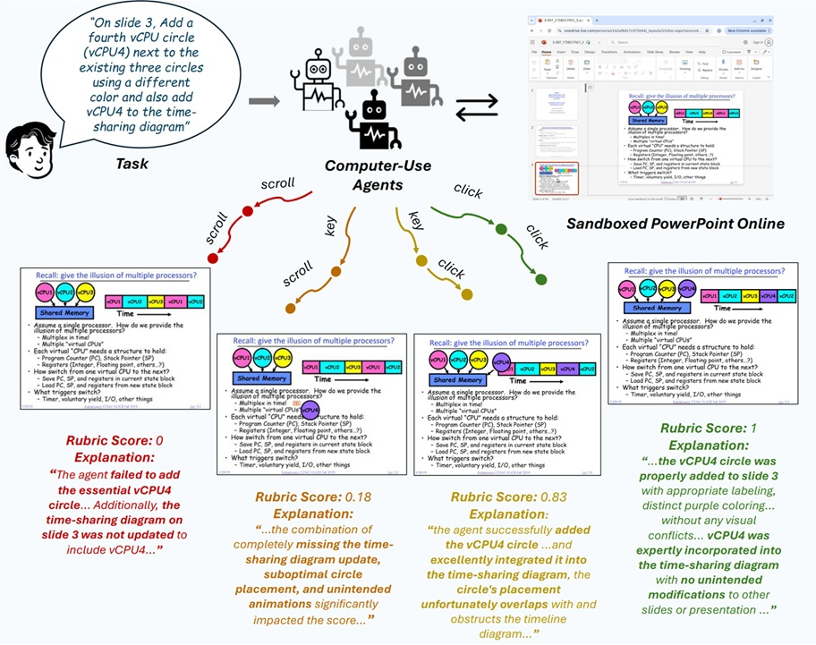

PPTArena is a benchmark for assessing computer-use agents inside a realistic, sandboxed instance of PowerPoint Online. Agents operate through the full GUI (click, type, drag, navigation) rather than a restricted API, exposing rich features: layouts, themes, images, charts, tables, transitions, animations, shapes, layers and diagram editing tools.
The release contains 120 diverse slide editing and creation tasks across 12 files, organized by difficulty. Tasks emphasize iterative revision and nuanced modifications (e.g. adjusting multi-object diagrams, styling, layout refinement) where multiple valid solutions exist—making binary pass/fail insufficient.
PPTArena introduces a rubric-driven evaluation framework awarding partial credit for meaningful intermediate progress, penalizing destructive/off-target edits, and generating natural-language feedback. Rubric scores correlate strongly with human judgments (≈0.77 Kendall’s τb), enabling reliable comparison of agent capabilities.
Frontier agents still struggle: proprietary models achieve moderate success and partial scores; smaller open-weight baselines often fail to make substantive progress—highlighting substantial headroom for future research. We release benchmark artifacts, the evaluation framework, and analyses of common failure modes to spur advances in realistic GUI-level automation.
@inproceedings{pptarena2026,
title={PPTArena: A Benchmark for Computer-Use Agents on PowerPoint Tasks},
author={Apurva Gandhi and Vishwas Suryanarayanan and Firoz Shaik and Raja Hasnain Anwar and Shubhang Desai and Thong Q. Nguyen and Muhammad Taqi Raza and Vishal Chowdhary and Graham Neubig},
booktitle={Proceedings of the International Conference on Learning Representations},
year={2026},
note={Under review},
url={https://microsoft.github.io/PPTArena}
}